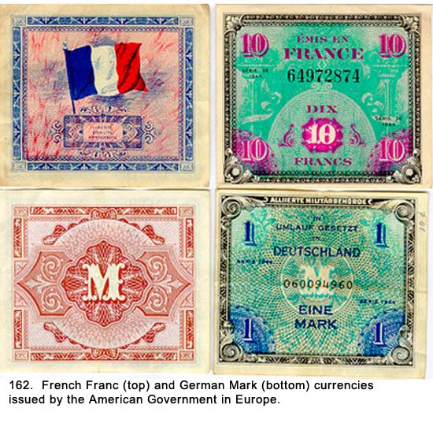

|
Table of Contents < - - - return Chapter 27 < - - - next
World War II Story by Robert F. Gallagher Chapter 26 - Black Market If a thing is worth doing, it's worth doing
badly. _______________________ From the time we first landed on the continent at Le Havre up until our arrival in Antwerp, we had little contact with anyone except those in our own battalion. Therefore, the concept of anyone dealing in the black market had been a non-issue. We had been given a couple of talks about the penalties for selling Army equipment but we paid little attention to it because no one had ever had the opportunity to do so. The warning meant nothing to us. The only thing relating to the black market we had heard about, other than talks, was an occasional article in Stars and Stripes telling about some soldier who had been caught. The resulting punishments were quite severe. According to the rumors, any GI caught selling gasoline when the European war was in progress would be shot by a firing squad. Whether this was true or not, nobody would even think of testing the rumor.  While doing MP duty in Antwerp, we began to deal with a lot of people other than those from our own outfit. There were local civilians, GIs from all over Europe, merchant seamen from around the world, and a mixture of soldiers from Britain, Canada, France, and other countries. In our work, and even while out on a pass, we came in contact with them on almost a daily basis and soon learned there was an extensive black market operating in that town. Our first introduction came in a subtle way, like a civilian approaching us and asking if we wanted to sell a pack of cigarettes. Just to put things into perspective, cigarettes were the most desirable commodity in Europe at that time. They had become a medium of exchange and in many cases, people would rather be paid in American cigarettes than in money from any country. They could be bartered for anything and were more in demand than currencies. No matter what you paid for them, if you tried hard enough, you could always make a profit on them. If you sold a pack, the next question always was, "Do you have any more?" We each had a ration book that allowed us to buy one carton of American-made cigarettes per week for fifty cents a carton. I had two cards and got double the allotted amount. When the battery clerk was passing out the cards, I had been on duty. When I went in to see him to get mine, he said they had all been passed out except mine. He had two left and he gave me both of them. Because I did not smoke, I always had double the allotment to sell or trade. We soon learned we could walk out of the PX where we bought them and the first person who followed us with his eyes as we left the building would give us twenty-five dollars for a carton. He might try to haggle on the price, but it always came back to the same twenty-five dollars. He would pay us in Belgian government francs we would then convert back into Army scrip or American dollars (greenbacks) at the camp money center. It seemed like such a simple way to make some fast spending money, but we also knew it was dealing in the black market, which was illegal. Because we did not want anything to interfere with our eventual trip home and a fast discharge, we were always worried about getting caught and being made an example of. Because of that, we usually, but not always, sold our cigarettes through an intermediary who was one of our Army buddies. Certain men looked at the whole black market game as a chance to make some big and fast money for a minimal amount of work. They paid us twenty dollars a carton and sold it for whatever they could get. There were stories about them taking bundles of them to Paris where the price was higher. Some who found it easy to make fast money on cigarettes started to deal in the black market of currencies. The American military forces had their own currency. Because the banking and financial institutions in continental Europe were in shambles after the war, the Americans printed and supervised the distribution of their own scrip for each country. For example, while we were in Antwerp, we were paid in Belgian Allied Military Francs, printed in the United States for our use, and the civilians had their own currency. The given denominations were supposed to be equal, but this was not the case on the black market. Soldiers were coming into Camp Tophat from all over Europe, and they had a lot of different types of currencies with them (See Fig. 162). The Army had set up exchanges where they could change one currency for another at the legal rate. Those going home to the States obviously wanted American greenbacks. This money had a yellow seal on its face to distinguish it from U.S. currencies back in the States, which had a blue seal, but I never found out why they did this. The money with a yellow seal was just as good as the other because I spent some of it when I got home. We soon learned there were two exchange rates going: the official, or legal rate, and the black market rate. We could buy about twice the number of francs on the black market with greenbacks as we could get at the legal rate. The illegal procedure being practiced was to sell American dollars for Belgian or French francs on the street in Antwerp at the black market rate and then turn around and exchange the francs for American dollars at Camp Tophat at the legal rate. It was doubling our money and it was so easy. The fellow who had the bunk next to me was really into the whole thing. He was working with several men from another battery. They wore different variations of their uniforms-disguises if you please-so the moneychangers at the camp would not recognize them when they showed up so frequently. They were flashing around big rolls of bills and sending some of it home. At one time, my neighbor told me that he had made over ten-thousand dollars (remember that in 1945, you could buy a nice house for less than this amount of money) in less than a month, and he did a lot more after that. He and his buddies were so eager to make as much money as possible; they were like gold-rush prospectors who had gone crazy looking for the mother lode. They spent every spare minute they had while not on duty planning ways to exchange currencies, and they never got caught. Despite the temptation, most of us stayed away from the money exchange game. Again, the only thing that mattered at this point was to make sure nothing interfered with our getting out of the Army. Also, money laundering was considered to be a much more serious infraction than selling cigarettes, and it could lead to a dishonorable discharge or jail time. I'm sure that those involved did not think of it in that way because they were making some big money. Other items belonging to the Army were sold on the black market, the primary one being gasoline. Gasoline was much in demand by civilians, and their sources of supply were almost non-existent. They were willing to pay exorbitant prices for it. The only case involving this activity we heard about involved a soldier from one of the other batteries in our battalion. He was a real loser and had been in trouble all through the time he was with us. He was the same GI who had walked into a civilian home near Nuremberg during the war and robbed the occupants of an elaborate silver tea set at gunpoint. The British MPs and some MPs from our outfit caught him in Antwerp. The British had staked out the civilian house of his girlfriend from which he operated and called our men in to help them because we had the only loaded guns. After his capture, the MPs were offered a large sum of money (forty-thousand dollars, was the figure we heard) to let him go free but they refused. After a court-martial, he was convicted and sent back to the States. We heard he was to serve time in prison, so either the penalty of a firing squad for dealing in the black market had been lifted when the war in Europe was over or it never existed in the first place. The Army executed just one GI during combat and that was for deserting his position. Our attitude toward the black market was ambivalent at best. On one hand, we were now part of the local police force with our assignment being to bring offenders to justice. On the other hand, we were dealing in illegal activity ourselves if only on a limited basis. For most transactions, we set our own rules where we used intermediaries to sell our cigarette ration and excused them for doing so. If the fellow in the next bunk to us was a major dealer, we turned our back. If he was in another battery, and was not a nice guy, we looked on him being caught as justice done. The double standard did not make any sense, but that's the way it was. Also, the new freedom we were afforded with many passes and extended furloughs required more money. When our movements were restricted during the war and we were confined in camps after it, there was no place to spend money, but now that had changed. Our Army pay did not allow us to do the things we wanted. Black market money filled the void. One of the frequently heard comments was, "It's not illegal if you don't get caught." Chapter 27 < - - - next Table of Contents < - - - return _________________________ Footnotes and Source of Photographs. Copyright, Robert F. Gallagher, 1999 - 2015, all rights reserved on all images and content.
|